Chapter 11 회귀분석 - 다중회귀분석
단순회귀분석은 회귀분석에서 독립변수와 종속변수의 수가 각각 하나씩인 경우에 이루어지는 분석을 뜻한다. 반면 다중회귀분석은 종속변수가 하나이고 독립변수가 여러 개인 경우의 회귀분석을 의미한다.
11.1 다중회귀분석
다중회귀분석은 2개 이상의 독립변수가 종속변수에 미치는 영향을 분석한다. 예를 들어, 매출액에 영향을 주는 변수로서 단순회귀에서 사용한 광고액 외에 종업원 근무년수, 1일 문의전화건수를 추가적으로 생각할 수 있다.
\(p\)개의 독립변수를 가지는 다중회귀모형은 다음과 같다.
\[ Y = \beta_0 + \beta_1 X_{1}+\beta_{2}X_{2}+\cdots+\beta_{i}X_{i}+\cdots+\beta_{p}X_{p} + \epsilon ,\,\,\,\ \epsilon \sim N ( 0 , \sigma^2 ) \] 여기서 \(\beta_i\)은 독립변수 \(X)i\)가 한 단위(e.g 1)증가할 때 종속변수 \(Y\)가 평균적으로 증가(또는 감소)하는 양이며, \(\beta_0\)는 \(Y\)의 기본(i.e \(X=0\))값 이다. 예를 들어 두 독립변수 \(X_1\)과 가 \(X_2\)종속변수 \(Y\)에 미치는 영향을 나타낸 회귀직선은 그림과 같이 나타난다.
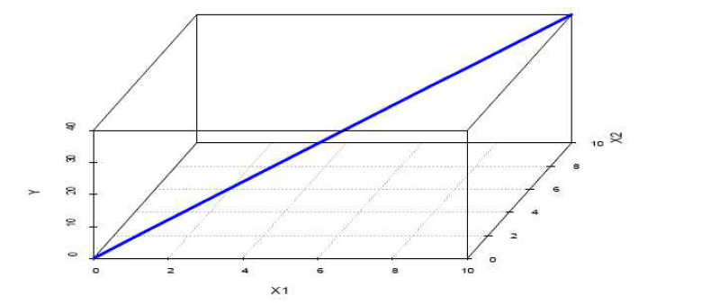
다중회귀분석에서 고려해야 할 점은 다음과 같다.
첫째, 독립변수간의 상관관계로 인해 비롯되는 다중공선성(multicollinearity) 문제
둘째, 어떤 잔차항이 다른 잔차항에 영향을 미치게 되는 오차항의 자기상관(autocorrelation) 또는 계열상관(serial correlation) 문제
셋째, 종속변수가 독립변수의 변화에 따라 다른 분산을 보이는 이분산성(heteroscedasticity) 문제 등이 있다.
다중회귀분석에서 다중공선성 문제는 분산팽창계수(variance inflation coefficient; VIF)또는 VIF의 역수인 공차한계(tolerance)를 이용하여 판단한다. VIF의 경우 통계량 값이 10이하 일 때, 공차한계가 0.1이상일 때 다중공선성 문제가 발생하지 않았다고 판단한다. 다중공선성 문제가 발생한 경우 회귀계수 \(\beta_i\)를 추정하는데 수리적 문제가 발생하게 되는데 이러한 경우 능형회귀분석, 주성분회귀분석 등 다른 분석방법을 이용하여 처리할 수 있다. 능형회귀, 주성분회귀분석은 다른 통계분석과의 결합된 복합분석방법이므로 여기서 다루지 않는다.
자기상관문제는 Durbin-Watson 통계량을 이용하여 판단하게 된다. Durbin-Watson 통계량은 0~4 의 범위를 가지며 통계량 값이 2보다 작을수록 오차항 사이에 양의 상관관계를, 통계량 값이 2보다 클수록 오차항 사이에 음의 상관관계를 갖는다. 그리고 통계량의 값이 2에 가까운 값을 가지면 오차항의 독립성이 만족되고 이 때 자기상관문제가 발생하지 않았다고 판단한다.
잔차의 정규성과 등분산성은 단순회귀와 마찬가지로 정규 P-P도표와 잔차의 산점도로 간단히 확인이 가능하다. 회귀의 기본가정을 만족한다고 해서 반드시 그 모형이 좋은 모형이라고 말할 수는 없지만, 기본 가정을 만족하면 좋은 모형을 찾기가 수월해진다. 따라서 기본가정이 만족하지 않는 경우에는 가정을 만족하게끔 조절해주는 것이 좋다.
이제 광고액(\(X_1\)), 종업원 근무년수(\(X_2\)), 1일 전화문의 건수(\(X_3\)) 등이 매출액(\(Y\))에 미치는 영향을 조사하기 위하여 다중회귀분석을 실시한다고 하자. 다중회귀분석에서 독립변수를 투입하는 방법은 ① 유의수준에 관계없이 독립변수를 일시에 투입하여 다중회귀모형을 구하는 방식, ② 독립변수를 단계별로 투입하는 방식, ③ 각 독립변수의 유의수준을 먼저 지정하고 그에 적합한 변수만으로 다중회귀식을 구하는 방식 등 세 가지가 있다.
다음의 절차를 진행하면 다중회귀분석을 실행 할 수 있다.
분석(A)
회귀분석(R)
선형(L)11.2 입력(동시투입)방식에 의한 다중회귀분석
왼쪽의 변수상자로부터 종속변수란에 매출액(\(Y\))을, 독립변수란에 광고액(\(X_1\)), 근무년수(\(X_2\)), 전화건수(\(X_3\))를 지정하여 옮겨 놓는다. 여기에서 변수선택의 방법은 다음과 같다.
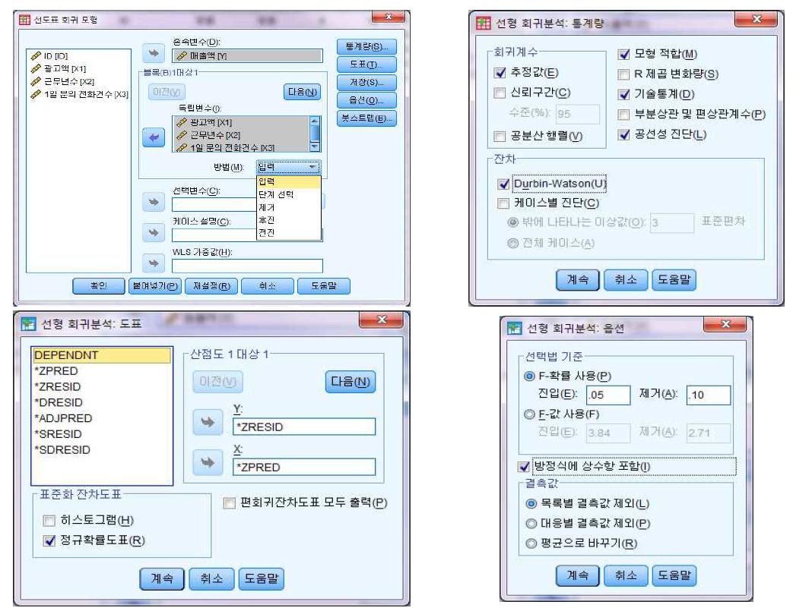
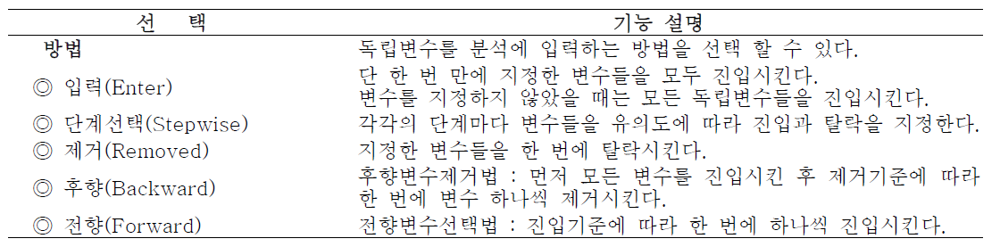
[결과 : 다중회귀분석의 기술통계량]
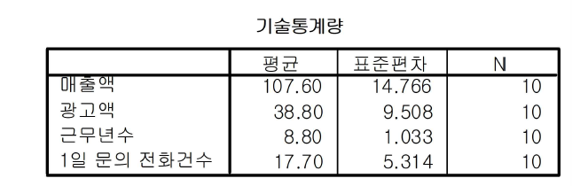
매출액, 광고액, 근무년수, 전화건수에 대한 평균과 표준편차, 사례 수에 대한 기술통계량이 나타나 있다.
[결과 : 다중회귀분석의 결정계수]
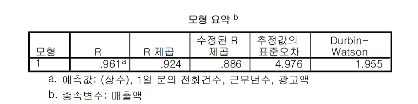
[결정계수 \(R^2\) 0.924] 독립변수인 광고액, 종업원 근무년수, 1일 전화문의건수로 구성된 회귀식이 매출액의 총변동의 92.4%를 설명하고 있다. 따라서 회귀식의 설명력은 상당히 높다고 볼 수 있다.
[결과 : 다중회귀분석 분산분석표]
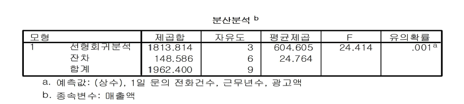
회귀식의 통계적 유의성을 검정하는 \(F\)-통계량의 값은 24.414이고, 이에 대한 유의도가 0.001이다. 따라서 Sig. F = 0.001 < 0.05이므로, 이 회귀식은 유의하다고 볼 수 있다. 즉, 독립변수인 \(X_1\), \(X_2\), \(X_3\)으로 구성된 회귀식은 통계적으로 유의하다고 볼 수 있다.
[결과 : 다중회귀분석 회귀계수]
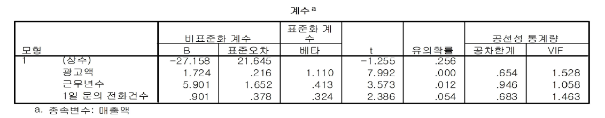
다중회귀식은
\[ \hat{Y} =-27.158+1.724*광고액 +5.901*근무년수 +0.901*전화건수 \]
으로 나타낼 수 있다. 다른 변수들을 일정하다고 놓고 보았을 때, 광고액이 1억원 늘어나면 매출액은 1.724억원씩, 종업원 근무년수가 1년 올라가면 매출액은 5.901억원씩 증가하는 것을 알 수 있다. 그런데 1일 문의전화건수의 회귀계수 0.901은 그 통계적 유의도가 낮아서(유의확률 0.53 > 0.05) 회귀계수로서의 의미가 없다고 할 수 있다. 다음으로, 베타(\(B\))는 회귀계수를 표준화한 것으로 회귀계수의 중요도를 나타낸다. 변수의 베타 값이 0에 가까울수록 무의미한 변수로 판정된다.
11.3 단계별 투입방식에 의한 다중회귀분석
단계별 투입방식(stepwise)은 통계적 유의도가 낮은 독립변수를 제외하고 다중회귀식을 얻는 방식이다. 광고액, 종업원 근무년수, 1일 전화문의건수의 독립변수 중에서 설명력이 높고 그리고 회귀계수의 통계적 유의도가 가장 높은 변수로부터 단계적으로 투입하다가, 회귀계수의 유의확률이 0.05 이하가 되면 탈락시킨다. 아마도 1일 문의전화건수 변수가 탈락할 것으로 예상할 수 있을 것이다. 분석 방법은 입력방법과 같으며, 다만 방법을 입력에서 ‘단계선택’으로 바꾸어 주면 된다.
[결과 : 단계별 다중회귀분석의 결정계수]
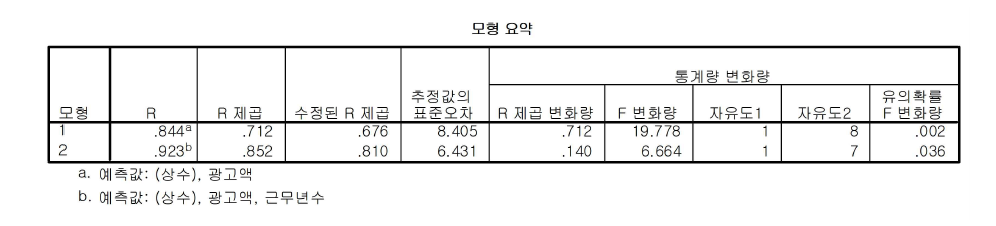
모형 1: 먼저 광고액이 투입되었으며, 변수 한 개가 종속변수 총변동의 71.2%를 설명하고 있다.
모형 2: 근무년수(\(X_2\))가 추가적으로 투입된 결과 설명력이 85.2%로 증가하였다. 따라서 설명력은 13.4%(81.0%-67.6%)만큼 증가되었다.
[결과 : 단계별 다중회귀분석 분산분석표]
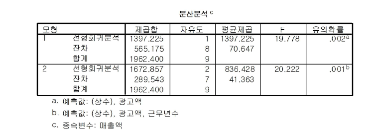
모형 1: 회귀식의 통계적 유의성을 검정하는 \(F\)-통계량 값은 19.778이고, 이에 대한 유의확률은 0.002이다. 따라서 유의확률 0.002 < 0.05이므로, 광고액(\(X_1\))으로 구성된 회귀식은 통계적으로 유의하다고 볼 수 있다.
모형 2: 회귀식의 통계적 유의성을 검정하는 \(F\)-통계량 값은 20.222이고, 이에 대한 유의확률은 0.001이다. 따라서 유의확률 0.001 < 0.05이므로, 광고액(\(X_1\)), 근무년수(\(X_2\))로 구성된 회귀식은 통계적으로 유의하다고 볼 수 있다.
[결과 : 단계별 다중회귀분석 회귀계수]
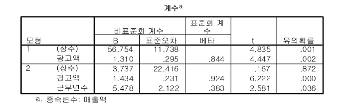
모형 1: 회귀식은 통계적으로 유의함을 알 수 있다. 이때의 상수(56.754)는 유의확률 0.001 < 0.05, 회귀계수(1.310)값은 유의확률 0.001 < 0.05로 모두 통계적으로 유의함을 알 수 있다. 1단계에서의 회귀식은 \(\hat{Y}=56.754+1.310X_1\)으로 나타낼 수 있다.
모형 2: 회귀식은 \(\hat{Y}=1.434X_1+5.478X_2\)이다. 이 회귀식과 각 회귀계수(상수항 제외)는 통계적으로 유의하다. 다중회귀분석에서는 독립변수의 개수가 많을수록 설명력은 높아지게 되므로 지나치게 많은 독립변수를 사용하는 것은 문제가 발생할 수 있다. 통계적으로 유의하지 못한 1일 문의전화건수(\(X_3\))는 포함되지 못한 것을 알 수 있다.
[단계별 중회귀식에 포함되지 않는 독립변수]
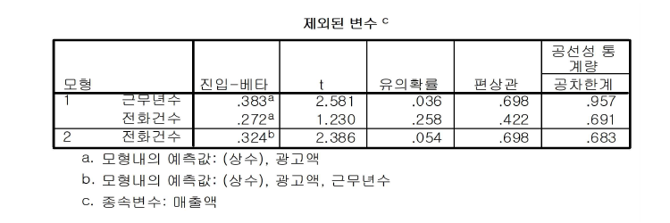
모형 2에서 투입되지 못한 1일 문의전화건수()를 보면 편상관계수(partial correlation)가 0.698로 높고 또한 통계적으로 유의하지 못하다(0.054 > 0.05). 즉, 를 추가로 투입하여도 현재의 설명력은 개선되는 부분이 매우 적다. 따라서 다중회귀분석은 여기서 끝난다.
모형 1과 모형 2 중 어느 것이 더 나은지는 모형 1의 설명력 84.4%보다 모형 2의 설명력 92.3%가 더 높다는 것을 보고 판단 할 수 있다. 그러나 연구자에 따라서 높아진 설명력 7.9%는 미미하다는 판단에서 모형 1을 선호할 수도 있다. 어느 모형을 선택하는가의 문제는 모형의 간결성과 설명력 사이에서 적절하게 판단하여 모형을 선택하면 된다.
11.4 다중 회귀모형 가정의 검정
회귀식의 가정은 변수와 잔차에 관련된 것으로서, 다중공선성, 잔차의 독립성, 정규성, 등분산성 등이 있다.
[결과 : 다중공선성과 잔차의 독립성, 정규성, 등분산성 검정]
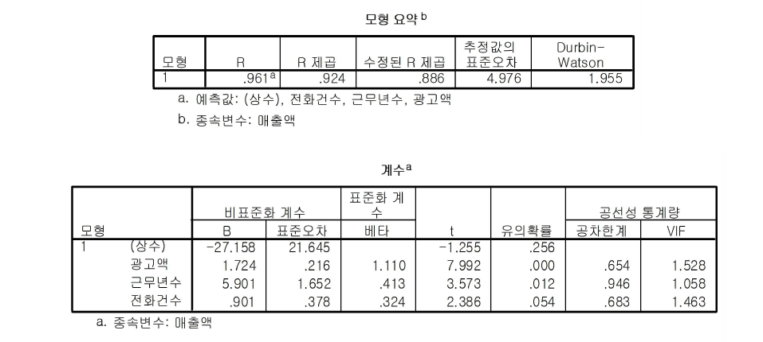
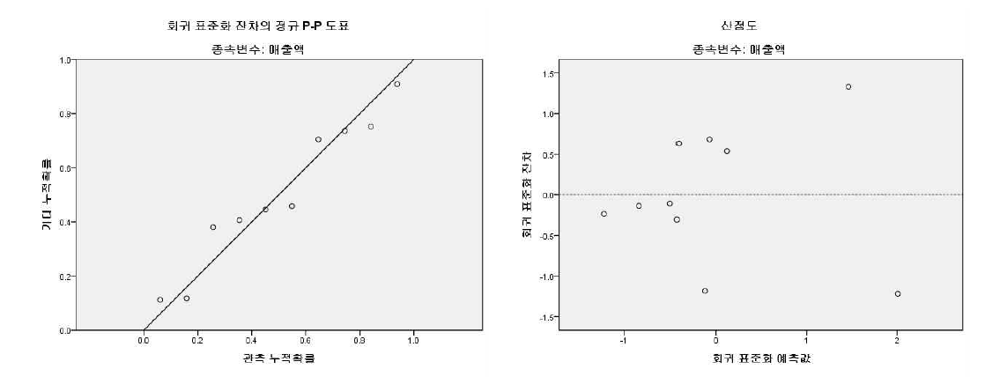
11.5 더미변수를 이용한 회귀분석
회귀분석 때에 독립변수 중에서 명목변수가 있을 때에, 그 변수를 더미변수(dummy variable) 혹은 가상변수로 변환하는 경우가 있다. 더미변수의 수는 원래 변수가 지닌 집단의 개수보다 하나 적다. 예를 들어 성별이라는 변수가 독립변수로 될 때 남자와 여자의 두 분류만 있으므로 1개의 더미변수로 나타낸다. 일반적으로 두 개의 집단으로 분류된 명목변수는 더미변수를 별도로 만들 필요 없이 그대로 투입해도 좋으나, 회귀식을 해석하는 과정에서 주의를 요한다.
더미변수를 이용한 회귀분석을 위한 예로 앞에서 매출액 예제에 교육수준(\(X_4\)) 변수를 추가 조사한 결과가 다음과 같다. 교육수준 변수 값 1은 고졸, 2는 전문대졸, 3은 대졸 이상으로 입력하였다.
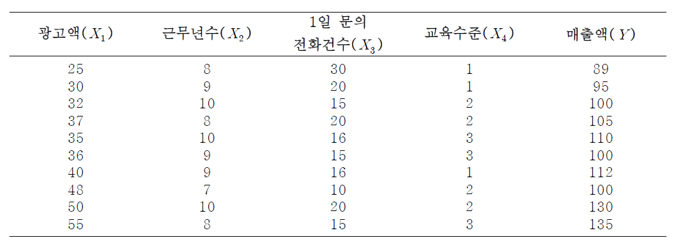
여기 예에서 \(X_4\)(교육수준)를 더미변수로 변환하여, 이 교육수준이 \(Y\)(매출액)에 미치는 영향을 회귀모형으로 분석한다. 따라서 회귀모형은 다음과 같다.
\[ \hat{Y}=\beta_0+\beta_1X_4 \] 여기서, \(\hat{Y}=Y\)(매출액)의 추정값이고, \(X_4\)는 교육수준이다.
더미변수를 지정하는 방식은 다음과 같다.
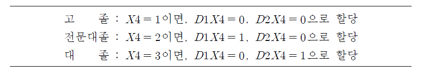
두 더미변수를 이용하여 회귀분석을 실시하면
분석(A)
회귀분석(R)
선형(L)
생성된 더미변수를 독립변수란에 지정하고 매출액을 종속변수로 지정한다.
[결과 : 더미변수의 회귀분석 결과]
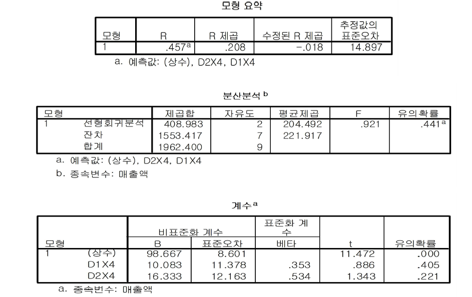
회귀식은 통계적으로 유의하지 않으며 (유의확률 = 0.441 > 0.05), 총변동에 대한 설명력이 20.8% (=0.208) 정도이다. 회귀식은 \(\hat{Y}=98.667+10.083D1X4+16.333D2X4\)이다.
두 회귀계수 모두 유의수준 0.05에서 통계적으로 유의하지 않다. 그러나 교육수준 변수가 유의하다는 가정 하에 세 집단에 따른 매출액을 예상하여 보면
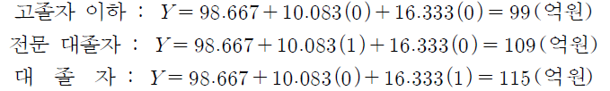
이 된다.
또 다른 예제를 살펴보자. employee.sav 파일을 이용하여 피교육, 최초급여, 근무월수, 경력, 성별, 직종, 소수민족이 현재급여에 어떠한 영향을 미치는지 알아보고자 한다.
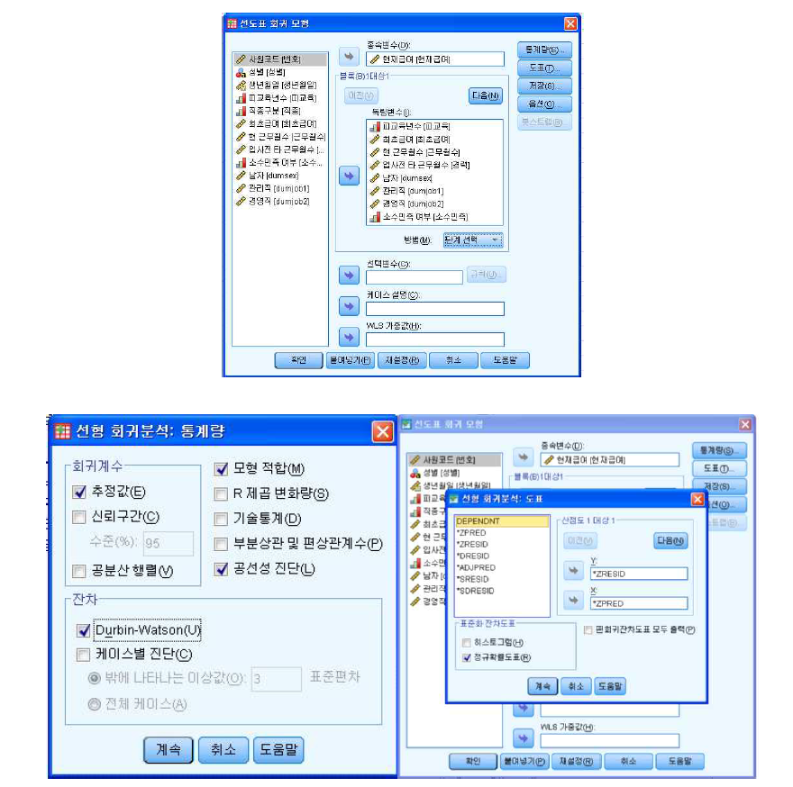
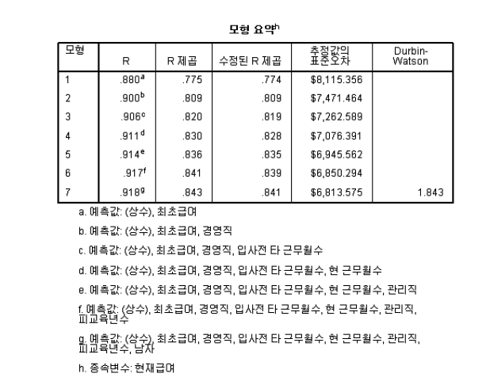
먼저 최초금액이 투입되었으며, 변수 \(X1\) 한 개가 종속변수 \(Y\) 총변동의 77.5% 설명하고 있다. 직종구분(\(X_2\))가 추가적으로 투입된 결과 설명력이 80.9%로 증가하였다. 따라서 설명력은 3.4%(77.5%에서 80.9%로) 증가하였다.
이후 변수가 하나씩 단계적으로 추가 될 때마다 설명력이 증가하여 모든 변수가 투입되었을 시에 설명력은 84.3%가 됨을 확인할 수 있다. Dubin-watson의 통계량이 2근처에 있으므로 잔차의 독립성이 설명된다.
• 단계별 중 회귀분석 분산분석표
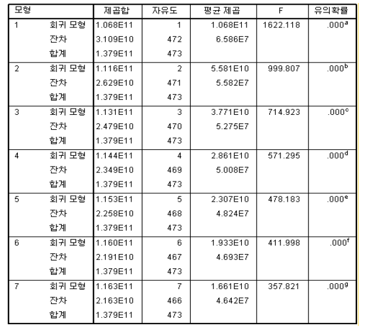 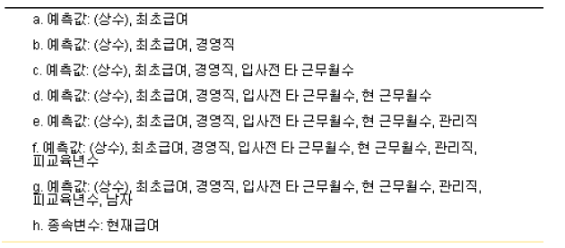
모형 1의 회귀식의 통계적 유의성을 검정하는 \(F\)-통계량 값은 1622.118이고, 이에 대한 유의확률은 0.000이다. 따라서 유의확률 0.000 < 0.05이므로, 최초급여(\(X_1\))으로 구성된 회귀식은 통계적으로 유의하다고 할 수 있다. 이후 변수가 추가됨에 따라 분석된 회귀모형들의 모든 유의 확률은 0.000이며 이는 유의수준 0.05보다 작으므로 모든 회귀모형은 통계적으로 유의하다고 할 수 있다.
- 단계별 중회귀분석 회귀계수
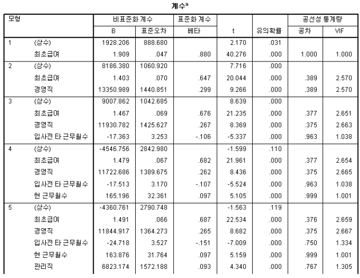 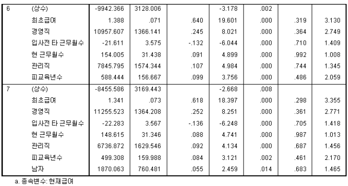
회귀식은
\[ \hat{Y} =1.34X _{최초급여} +11255.52X _{경영직} -22.28X _{입사전타근무월수} +148.62X _{현 근무월수} +6736.87X _{관리직} +499.31X _{피교육년수} +1870.06X _{남자} \]
으로 나타낼 수 있으며 각 회귀계수는 통계적으로 모두 유의하기 때문에 포함될 수 있다. 또한 공선성 통계량의 모든 VIF는 10을 넘지 않기 때문에 다중 공선성의 문제가 생기지 않았다.
다중공선성과 잔차의 정규성, 등분산성 검정
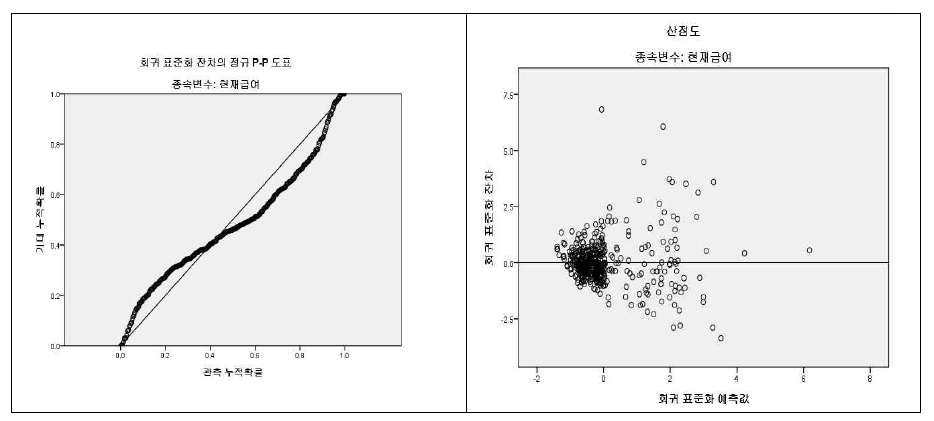
도표와 같이 잔차(오차항)의 정규성은 가운데 실선을 따라 점들이 모여 있으므로 정규성을 만족한다고 할 수 있다. 회귀 표준화 잔차를 나타낸 산점도를 통해 잔차의 등분산성, 선형성 등을 판단할 수 있다. 회귀 표준화 잔차 값이 0을 기준으로 고르게 퍼져 있으므로 등분산성을 만족하는데 문제가 없으며 잔차들이 특정한 패턴 없이 무작위로 퍼져있으므로 선형성을 가정하는데 문제가 없다.